1. 플랫폼 자산의 정의
플랫폼 자산은 단순한 파일이 아니라, 현장에서 검증되고 다른 프로젝트에 적용할 수 있도록 구조화된 실행 지식입니다. 자산은 다음 FDE가 처음부터 다시 만들지 않도록 문제 해결의 맥락과 사용 조건까지 함께 보존합니다.
현장 탐색 질문, 관찰표, 증거 카드
객체·속성·관계·상태·이벤트·규칙·행동
판단 질문, 권한, 금지 행동, 근거
승인·예외·알림·감사·롤백 흐름
화면, 필드, 데이터 모델, API 계약
기준선, 테스트, 성과 측정 방법
사용자·관리자·강사용 매뉴얼
공통 기능과 설정 가능한 모듈
검증 결과와 Evidence가 연결되어 있고, 다른 사람이 이해할 수 있는 설명과 사용 조건이 있으며, 재사용 과정에서 고객 고유 데이터가 노출되지 않아야 합니다.
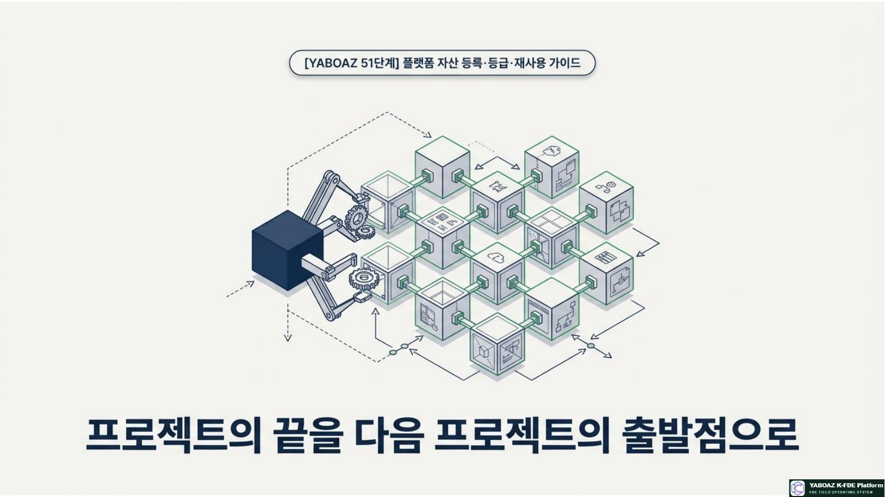
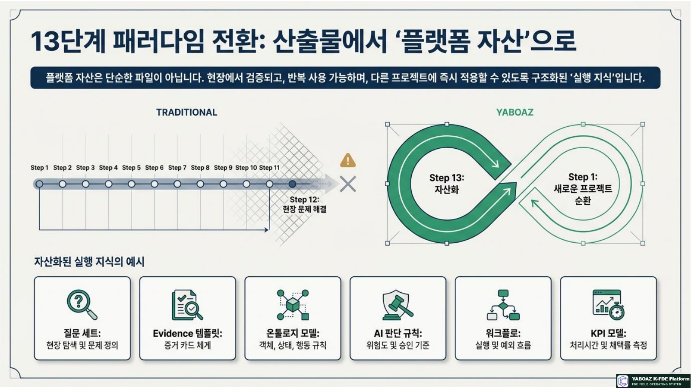
2. 자산화가 필요한 이유
| 문제 | 자산화하지 않을 때 | 자산화 후 |
|---|---|---|
| 반복 작업 | 새 프로젝트마다 질문·표·규칙을 다시 작성 | 검증된 템플릿을 복제하고 고객 맥락만 설정 |
| 품질 편차 | 작성자 경험에 따라 산출물 품질이 달라짐 | 등급·체크리스트·승인 기준으로 품질 관리 |
| 지식 유실 | 프로젝트 종료 후 담당자 기억에 의존 | 문서·근거·버전·사용 이력으로 조직에 축적 |
| 확산 지연 | 영업과 교육에서 적용 사례를 새로 설명 | 사례·패키지·추천 규칙으로 빠르게 제안 |
| 오용 위험 | 검증 범위를 벗어나 무리하게 적용 | 적용 조건·금지 조건·필수 Human Gate 명시 |
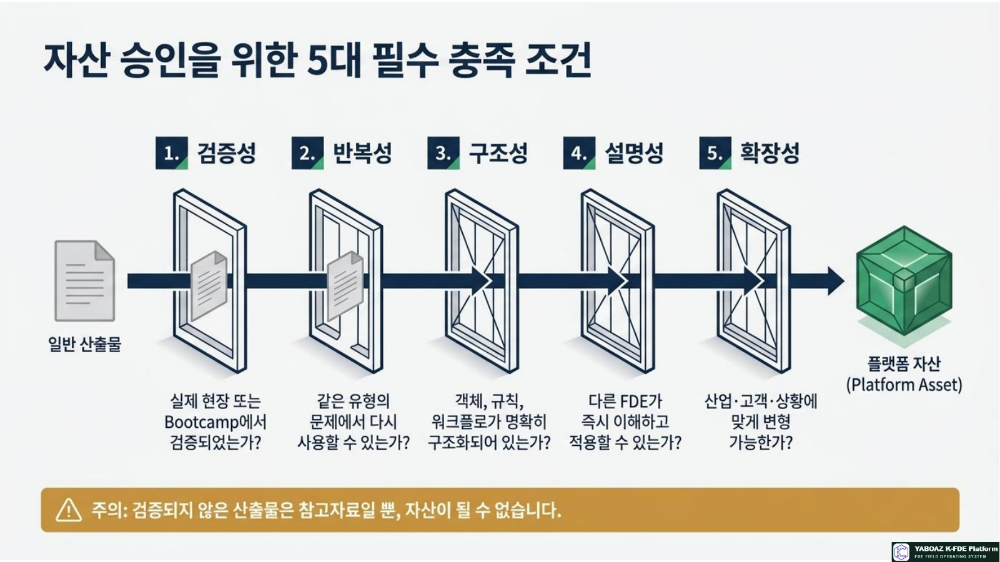
3. 자산화 전체 운영 흐름
자산화는 저장 버튼 하나로 끝나지 않습니다. 검증 증거를 확인하고, 적용 가능한 범위와 제한을 정의한 뒤, 소유자와 승인자가 품질을 책임지는 운영 프로세스입니다.
| 단계 | 핵심 질문 | 필수 산출물 | 완료 기준 |
|---|---|---|---|
| 후보 식별 | 무엇이 반복적으로 효과를 만들었는가? | 후보 목록 | Bootcamp 결과와 연결 |
| 구조화 | 다른 FDE가 이해하고 적용할 수 있는가? | 자산 등록 카드 | 입력·출력·사용 조건 명확 |
| 등급 심사 | 어느 수준까지 검증되었는가? | 등급 판정표 | Evidence·KPI·검토자 확인 |
| 배포 | 어떤 프로젝트에 추천할 것인가? | 라이브러리 등록 | 검색 태그·버전·제한 사항 등록 |
| 개선 | 재사용 결과가 품질을 높였는가? | 사용 이력·리뷰 | 다음 버전에 반영 |
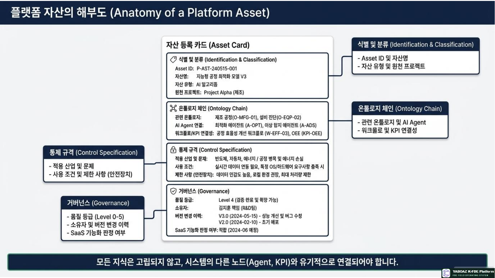
4. 자산 유형 분류
| 유형 | 대표 자산 | 검색 태그 | 주요 사용자 |
|---|---|---|---|
| Discovery Asset | 현장 탐색 질문, 관찰표, Evidence 템플릿 | 산업·업무·문제 유형 | Discovery FDE |
| Problem Asset | 2A4 문제정의서, 원인 분석 템플릿 | 증상·원인·KPI | Structurer |
| Ontology Asset | 객체·관계·상태·이벤트 모델 | 도메인·객체·관계 | Ontology FDE |
| AI Judgment Asset | 판단 질문, 규칙, 금지 판단, 평가표 | 판단·위험·Human Gate | AI Judgment FDE |
| Agent Asset | 역할·입력·도구·권한·실패 처리 사양서 | Agent 역할·API·권한 | Agent FDE |
| Workflow Asset | 상태 전이, 승인, 예외, 알림, 롤백 흐름 | 이벤트·승인·SLA | Workflow FDE |
| UI/Data/API Asset | 화면 구조, 데이터 모델, API 계약 | 화면·필드·연동 | Builder |
| KPI Asset | 기준선·개선율·채택률·오류율 모델 | 성과·검증·대시보드 | Validator |
| Bootcamp Asset | 테스트 시나리오, 평가표, 관찰 기록 | 시나리오·사용자·통과 | Validator·Deployer |
| Manual Asset | 운영 매뉴얼, 교육 자료, FAQ | 역할·교육·운영 | Deployer·Academy |
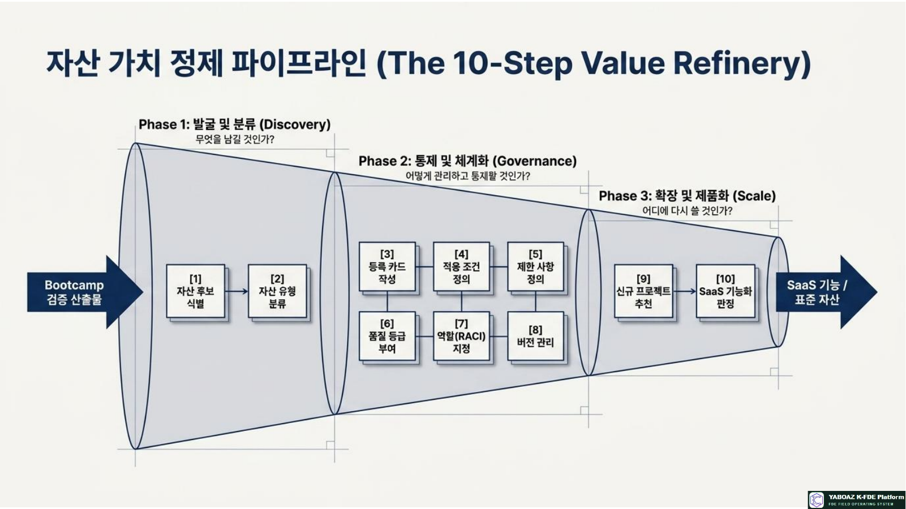
5. 자산 등록 카드
등록 카드는 자산을 검색하고 재사용하기 위한 기본 단위입니다. 이름만 저장하지 말고, 어떤 문제를 어떤 근거로 해결했는지와 어디까지 안전하게 쓸 수 있는지를 함께 적습니다.
| 항목 | 작성 내용 | 품질 질문 |
|---|---|---|
| 식별 정보 | Asset ID, 자산명, 유형, 버전, 상태 | 다른 자산과 중복되지 않는가? |
| 원천·목적 | 원천 프로젝트, 관련 단계, 해결 문제 | 왜 만들어졌는지 설명되는가? |
| 검증 근거 | Evidence ID, Bootcamp 시나리오, KPI | 실제 결과와 연결되는가? |
| 구성 요소 | 온톨로지, Agent, 워크플로, 화면, API | 입력과 출력이 명확한가? |
| 적용 범위 | 산업, 업무, 필수 데이터, 필수 역할, 시스템 | 어떤 프로젝트에 추천할 수 있는가? |
| 제한 사항 | 사용 금지 조건, 규제, 개인정보, Human Gate | 오용될 수 있는 상황이 차단되는가? |
| 책임 정보 | 작성자, 소유자, 검토자, 승인자, 문의 채널 | 질문과 변경 요청의 책임자가 있는가? |
| 재사용 정보 | 재사용 예시, 설정 항목, 의존 자산, SaaS 후보 | 복제 후 무엇을 바꿔야 하는가? |
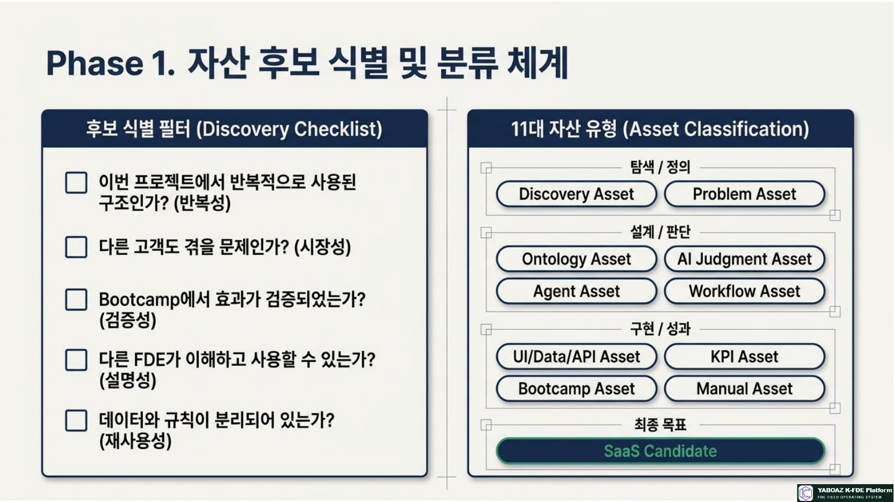
6. Level 0~5 품질 등급
등급은 자산의 우열이 아니라 검증 범위와 사용 권한을 의미합니다. 등급이 높을수록 더 넓은 프로젝트에서 재사용할 수 있지만, 적용 조건과 승인 책임은 계속 유지됩니다.
아이디어
좋은 가능성이 있지만 아직 검증되지 않은 상태
- 참고용 메모
- 가설과 질문 중심
- 프로젝트 적용 금지
초안
내부 검토가 가능한 최소 문서 상태
- 기본 목적과 구성 존재
- 작성자 리뷰 필요
- 실습 외 공식 사용 제한
구조화
교육·실습에서 반복 사용할 수 있는 상태
- 입력·출력 정의
- 사용 설명서 포함
- 교육생 적용 가능
MVP 검증
한 프로젝트의 Bootcamp에서 효과가 확인된 상태
- KPI 결과 연결
- 제한적 유사 프로젝트 재사용
- FDE Lead 리뷰 필요
현장 검증
고객 현장 운영에서 반복 효과가 확인된 상태
- 운영·예외·로그 포함
- 고객 프로젝트 재사용
- 산업 조건 명시
표준 자산
복수 프로젝트에서 검증되어 공식 템플릿화된 상태
- 표준 문서·품질 기준
- SaaS 모듈화 검토 완료
- 공식 라이브러리 배포
문서 완성만으로 등급이 올라가지 않습니다. 실제 사용 사례, KPI, 사용자 피드백, 예외 처리, 보안·감사 검토가 누적되어야 합니다.
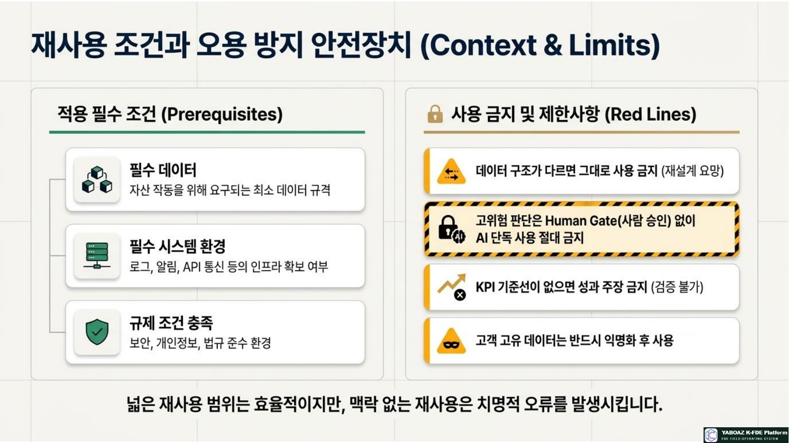
7. 재사용 조건과 제한 사항
| 구분 | 재사용 가능 조건 | 제한·금지 조건 |
|---|---|---|
| 동일 고객 | 같은 조직의 다른 부서가 동일한 업무 구조를 가짐 | 부서별 권한·KPI가 다르면 복제 후 재검토 |
| 동일 산업 | 객체·이벤트·규칙의 공통 코어가 유지됨 | 법규·안전 기준이 다르면 별도 승인 |
| 유사 업무 | 이벤트→판단→승인→실행 흐름이 유사함 | Human Gate 없는 고위험 자동 실행 금지 |
| 타 산업 | 고객 데이터와 산업 규칙을 설정값으로 분리 | 원본 데이터·고객 고유 용어를 그대로 복사 금지 |
| SaaS 기능화 | 반복 수요, 설정 가능성, KPI 검증, 운영 가능성 충족 | 단일 고객 전용 규칙은 공통 모듈로 배포 금지 |
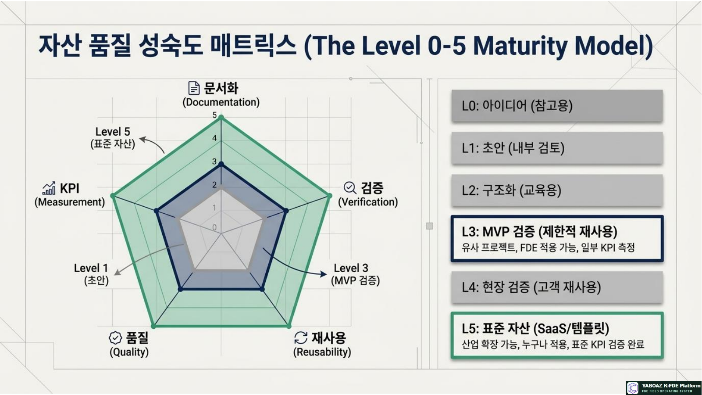
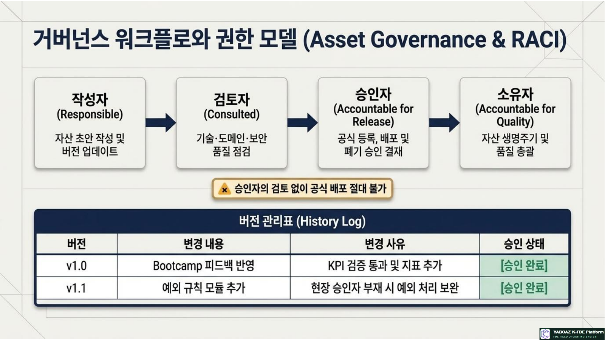
8. 소유자·승인자·버전 관리
| 역할 | 책임 | 결정 권한 |
|---|---|---|
| 작성자 | 초안과 사용 설명 작성 | 초안 수정 |
| 자산 소유자 | 품질·업데이트·사용 조건 유지 | 변경 요청과 등급 제안 |
| 도메인 검토자 | 산업 규칙·현장 적합성 검토 | 적용 범위 의견 |
| 기술·보안 검토자 | API·권한·개인정보·감사 검토 | 기술 배포 의견 |
| 승인자 | 공식 등록과 등급 승인 | 공식 사용 승인·보류·폐기 |
| 사용자 | 프로젝트 적용 후 결과와 오류 피드백 | 사용 리뷰 등록 |
| 버전 | 의미 | 변경 예시 | 필요 절차 |
|---|---|---|---|
| v0.x | 초안·실험 | 구성·용어·질문 추가 | 작성자 리뷰 |
| v1.0 | 첫 공식 배포 | Bootcamp 통과 반영 | 소유자·승인자 승인 |
| v1.x | 하위 호환 개선 | 예외 규칙·설명 보완 | 변경 이력 기록 |
| v2.0 | 구조적 변경 | 객체·API·권한 변경 | 재검증·등급 재심사 |
| Retired | 폐기·사용 중지 | 규정 변경·오류 반복 | 사용 중단 공지·대체 자산 연결 |
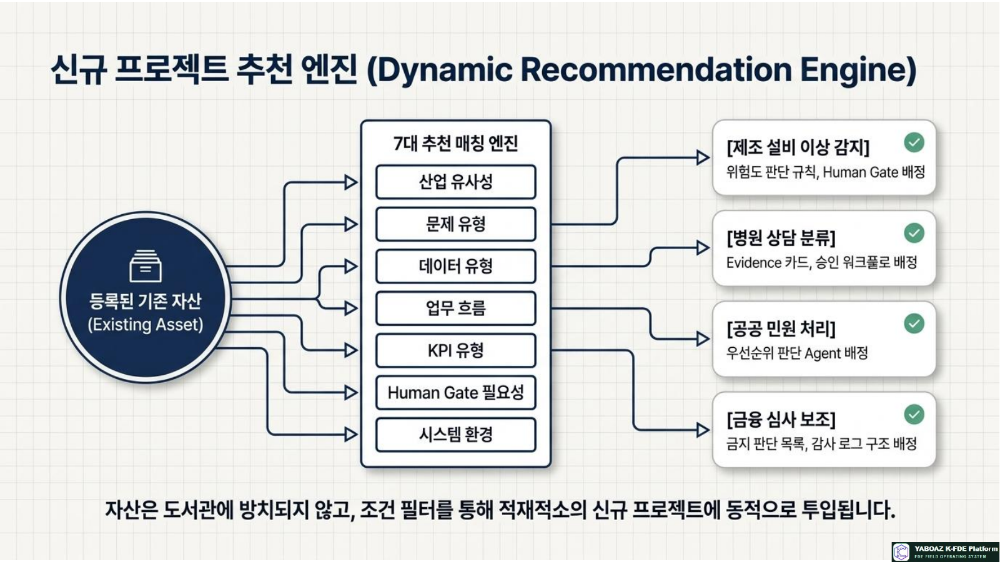
9. 신규 프로젝트 추천 엔진
자산 라이브러리는 보관함이 아니라 프로젝트 착수 시 적절한 출발점을 추천하는 운영 도구여야 합니다.
| 추천 기준 | 질문 | 예시 태그 |
|---|---|---|
| 산업 유사성 | 같은 산업·규제·업무인가? | 재난안전, 제조, 병원 |
| 문제 유형 | 분류·위험 판단·승인·상담 중 무엇인가? | 위험 판단, 민원 배정 |
| 데이터 유형 | 문서·로그·센서·고객 데이터가 있는가? | 센서, 인터뷰, ERP |
| 워크플로 구조 | 이벤트→판단→승인→실행 흐름이 유사한가? | Human Gate, SLA |
| KPI | 처리시간·오류율·채택률을 비교할 수 있는가? | 판단시간, 승인시간 |
| 적용 등급 | 현재 프로젝트가 요구하는 검증 수준을 충족하는가? | Level 3 이상 |
추천 결과 예시 · 제조 설비 이상 감지
추천 자산: 설비-센서 온톨로지(Level 4), 이상 감지 질문 세트(Level 3), 정비 우선순위 워크플로(Level 3), Human Gate 승인 템플릿(Level 5), 제조 KPI 모델(Level 4). 적용 전 센서 단위와 정비 권한, 설비 중단 승인 규칙을 고객 환경에 맞게 재설정합니다.
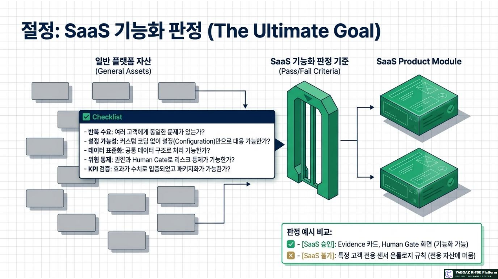
10. SaaS 기능화 판정
| 판정 기준 | 질문 | 판정 신호 |
|---|---|---|
| 반복 수요 | 복수 고객에게 공통 문제가 있는가? | 유사 자산 사용 요청이 반복 |
| 설정 가능성 | 고객 차이를 설정 화면으로 처리할 수 있는가? | 객체·규칙·권한을 분리 |
| 표준 데이터 | 공통 API와 데이터 모델로 연결 가능한가? | 필수 필드와 매핑 규칙 정의 |
| 안전·감사 | Human Gate·권한·로그가 기본 제공되는가? | 승인·실행·사후 검토 추적 |
| 성과 | 도입 효과를 KPI로 비교할 수 있는가? | 기준선·목표·측정 방법 존재 |
| 운영·수익성 | 고객지원·유지보수·과금이 가능한가? | 패키지·구독·모듈 경계 명확 |
Evidence 관리, Human Gate, KPI 대시보드
위험도 규칙, 심사 보조, 공급망 평가
특정 센서·조직·규정에만 종속된 기능
개인정보·영업비밀·검증 없는 고위험 판단
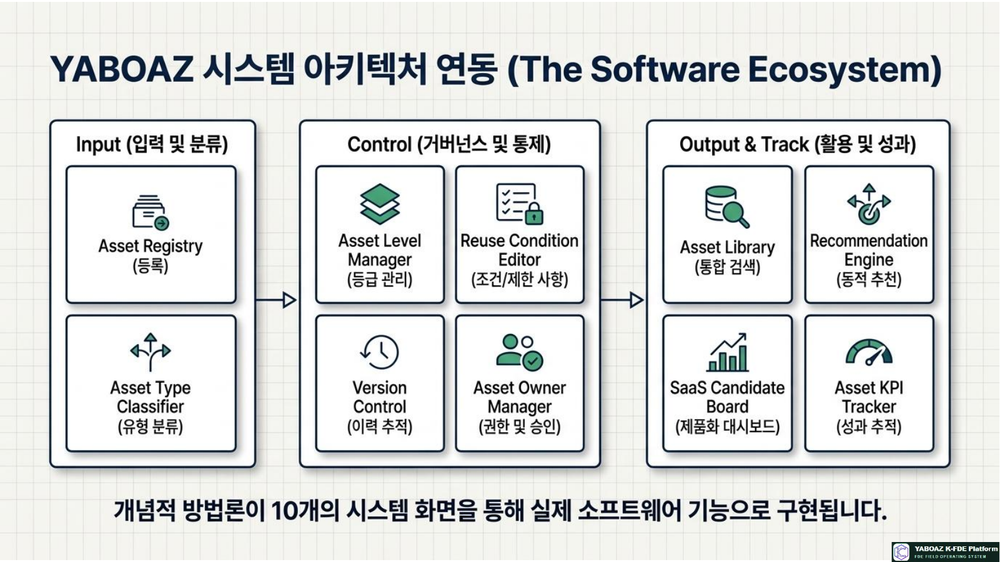
11. FireNavi 자산 등록 예시
| 항목 | 등록 내용 |
|---|---|
| 자산명·유형 | FireNavi 위험도 판단·승인 워크플로 템플릿 · Workflow Asset |
| 원천·문제 | FireNavi MVP · 위험 신호 발생 후 판단·승인·알림 지연 |
| 관련 구조 | 센서·구역·경로·관리자·알림 / 위험도 판단 Agent·승인 Agent |
| 검증 상태 | Bootcamp 통과 · 판단시간·승인시간·로그 완전성 측정 |
| 등급 | Level 3 MVP 검증 · 복수 프로젝트 적용 후 Level 4 심사 |
| 재사용 조건 | 이벤트 로그, 위치 정보, 승인자 역할, 감사 로그 API, Human Gate 필수 |
| 제한 사항 | 생명안전 최종 판단과 대피 명령을 AI 단독 실행하지 않음 |
| SaaS 후보 | 승인 조건·에스컬레이션·알림·감사 로그를 설정형 워크플로 모듈로 기능화 |
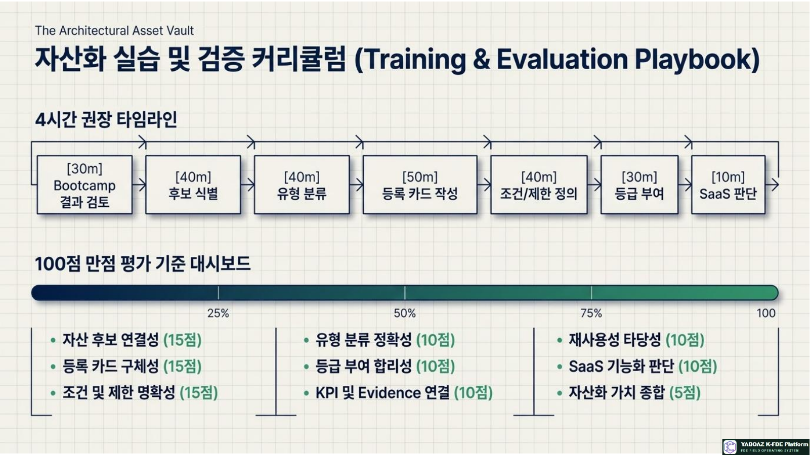
12. 자산 운영 체크리스트
프로젝트 경험을 플랫폼 자산으로 바꾸는 것은 자료를 쌓는 일이 아니라, 검증된 실행 구조를 안전하게 복제하고 개선하는 조직 능력을 만드는 일입니다. 자산에는 항상 근거, 책임, 버전, 제한, 재사용 결과가 함께 있어야 합니다.
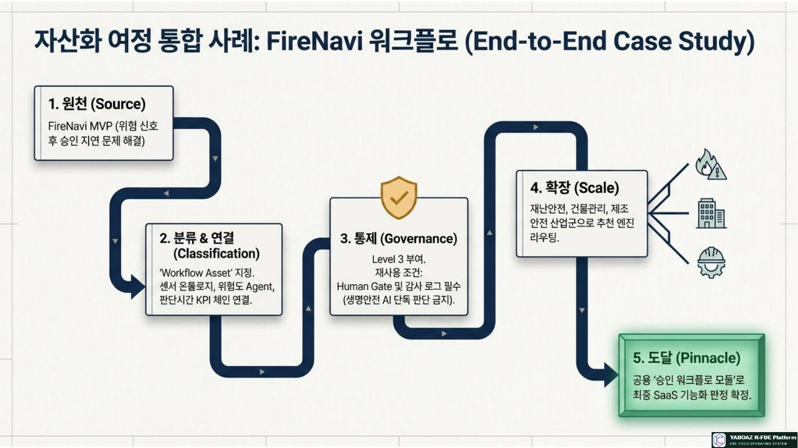
13. 교육 실습 구성
| 시간 | 실습 내용 | 산출물 |
|---|---|---|
| 30분 | Bootcamp 결과와 자산 후보 검토 | 후보 목록 |
| 40분 | 자산 유형·검색 태그 분류 | 분류표 |
| 50분 | 자산 등록 카드 작성 | 등록 카드 |
| 40분 | 적용 조건·제한·익명화 정의 | 재사용 조건표 |
| 30분 | Level 0~5 등급 심사 | 등급 판정표 |
| 30분 | SaaS 기능화 여부 판단 | 제품화 판정표 |
| 40분 | 신규 프로젝트 추천 시뮬레이션 | 추천 결과 |
| 40분 | 발표와 피드백 | 개선 백로그 |
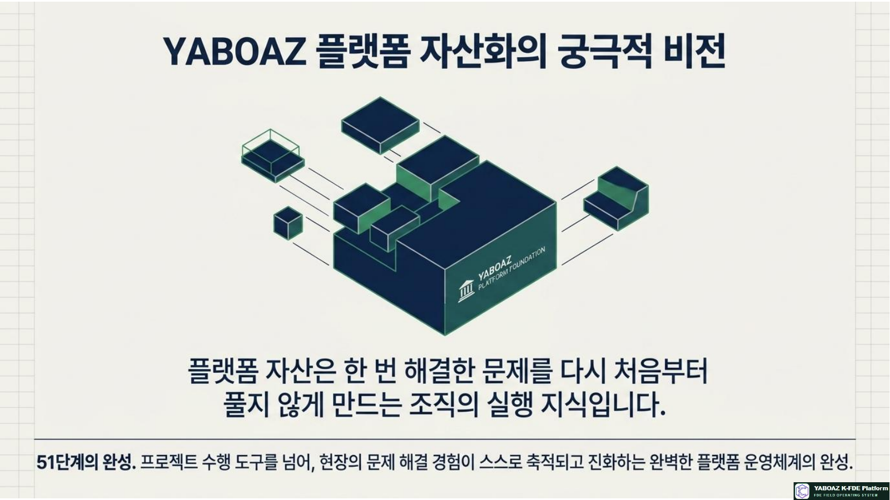